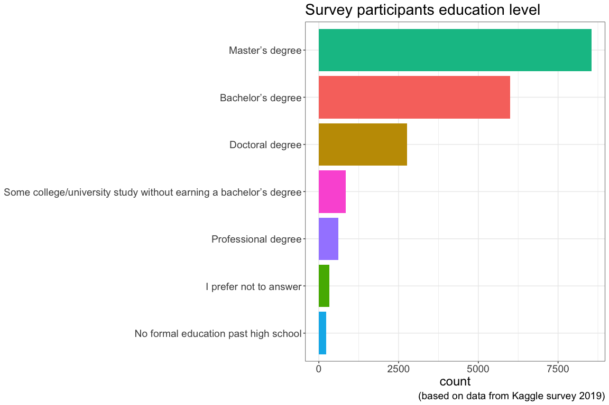
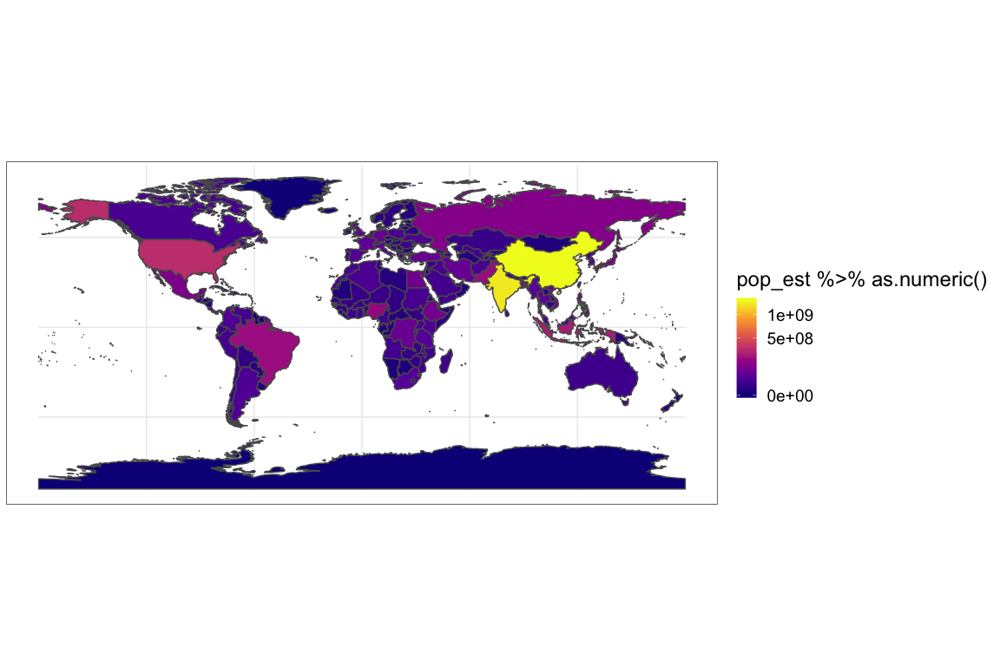
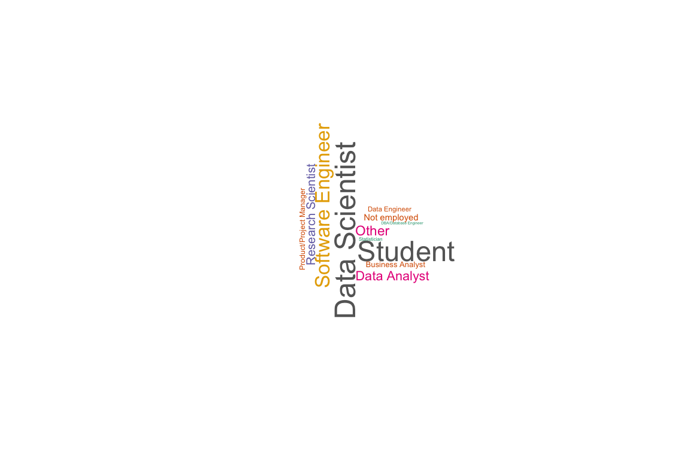

Chapter 2 Results
The results are presented by graphs relating parameters either vs time or vs other parameters
2.1 Survey participants education level
The following plot shows Survey participants education level. Very few participants have a non-academic background. By no means a academic background is a pre-requisit to use machine learning two skills are very helpful
- Coding experience
- Statistical knowledge

Coding experience speeds up the process to implement the machine learning ideas and concepts. Most effort during a machien learning project will go into
- Data pre-processing
- Model tuning
The actual implementation of the algorithm is mostly a matter of 10 - 20 lines of code. Below the neural network definition for a self driving RC model car of the donkey car framework.
The neural network is defined using the Keras API which sits on top of Tensorflow, the program is written in Python
img_in = Input(shape=input_shape, name='img_in')
x = img_in
x = Convolution2D(24, (5,5), strides=(2,2), activation='relu', name="conv2d_1")(x)
x = Dropout(drop)(x)
x = Convolution2D(32, (5,5), strides=(2,2), activation='relu', name="conv2d_2")(x)
x = Dropout(drop)(x)
if input_shape[0] > 32 :
x = Convolution2D(64, (5,5), strides=(2,2), activation='relu', name="conv2d_3")(x)
else:
x = Convolution2D(64, (3,3), strides=(1,1), activation='relu', name="conv2d_3")(x)
if input_shape[0] > 64 :
x = Convolution2D(64, (3,3), strides=(2,2), activation='relu', name="conv2d_4")(x)
elif input_shape[0] > 32 :
x = Convolution2D(64, (3,3), strides=(1,1), activation='relu', name="conv2d_4")(x)
x = Dropout(drop)(x)
x = Convolution2D(64, (3,3), strides=(1,1), activation='relu', name="conv2d_5")(x)
x = Flatten(name='flattened')(x)
x = Dense(100, activation='relu', name="fc_1")(x)
x = Dropout(drop)(x)
x = Dense(50, activation='relu', name="fc_2")(x)
x = Dropout(drop)(x)
angle_out = Dense(15, activation='softmax', name='angle_out')(x)
throttle_out = Dense(20, activation='softmax', name='throttle_out')(x)
model = Model(inputs=[img_in], outputs=[angle_out, throttle_out])2.2 Who uses which algorithm
There are plenty of machine learning algorithms in use, some have been around for quite some time already, others are quite new. Especially in the field of neural networks there is plenty of research ongoing as can be seen by a “neural network” search on the moderated but not peer reviewed electronic preprint plattform Arxiv.

Splitting the graphs up for each category of education and plotting the percentage of usage for the given education level gives an insight into how the usage of algorithms differs over levels of education

The graph above shows that regression and tree-based algorithms are very popular
They are:
- Less computationally intensive than neural networks
- Available in the de facto standard machine learning library in Python, scikit-learn.
Below historical data to some the algorithms are given, together with links to the wikipedia article of the algorithm.
- Linear regression
- Legendre, 1805
- Gauss, 1809
- Logistic regression
- Pierre Francois Verhulst, 1830s
- Random forest
- Ho, 1995
- Gradient boosting trees
- L. Breiman, 1997
- Convolutional neural networks
- Kunihiko Fukushima, 1980
- Recurrent neural networks
- David Rumelhart, 1986
- Dense neural networks
- Independently proposed by Alexander Bain, 1873 and William James, 1890
- Generative adversarial networks
- Goodfellow, 2010-2014
2.3 Experience and algorithms
Most of the survey participants have less than 3 years experience as can be seen in the graph below. Due to fact that the number in each category differs a lot a representation of percentages is beneficial for some analysis.

The usage of algorithms for different duration of experience is given in the graph below.
Splitting the graphs up for each category of experience and plotting the percentage of usage for the given experience level gives an insight into how the usage of algorithms differs over levels of experience

- Regression and trees are popular at all level of experience
- Neural networks are more popular for less experienced
- 20% of very experienced use no algorithm
2.4 Experience and new algorithms
sadfadsf

Splitting the graphs up for each category of experience and plotting the percentage of usage for the given experience level gives an insight into how the usage of new algorithms differs over levels of experience



